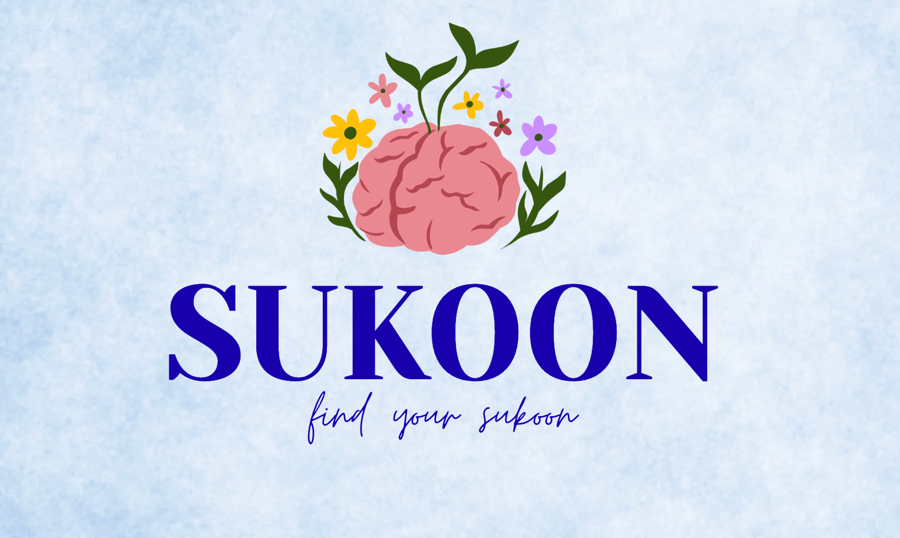

Sukoon is an AI-powered study companion designed to help students navigate the challenges of academic life. From creating personalized study plans to managing academic stress, Sukoon provides helpful guidance, practical strategies, and a supportive chatbot experience helping students study smarter while taking care of their well-being.
Anika Singh is an avid reader and programmer who hopes to use her coding skills to create meaningful solutions that help people. As a student herself, she understands the pressure, expectations and stress that can come with academic life.
With Sukoon, she hopes to turn her passion for technology into something that genuinely supports other students, helping them navigate academic stress, find practical ways to cope and remember that their well-being matters alongside their achievements.
Beyond coding and building Sukoon, Anika loves listening to music and getting lost in a good book, two things that bring her a sense of calm and inspiration.
“I wanted to create something that could make students feel a little less alone when academic life gets overwhelming.”
Anika Singh, Founder of Sukoon 💙
Create a simple study routine that works around your subjects and available time.
Try quick techniques to calm yourself when exam stress starts taking over.
Feeling discouraged after a bad result? Sukoon is here to help you reset.
Discover practical ways to reduce distractions and get back into focus.
Your study & wellbeing companion